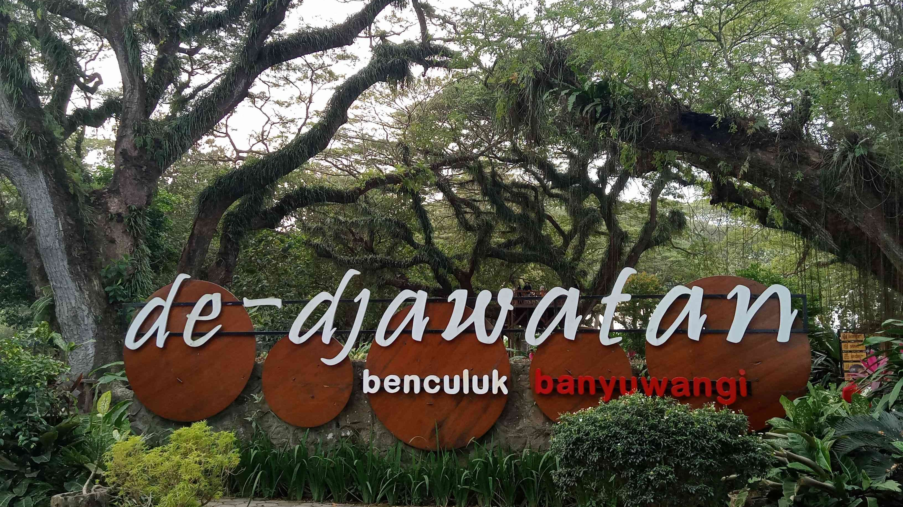
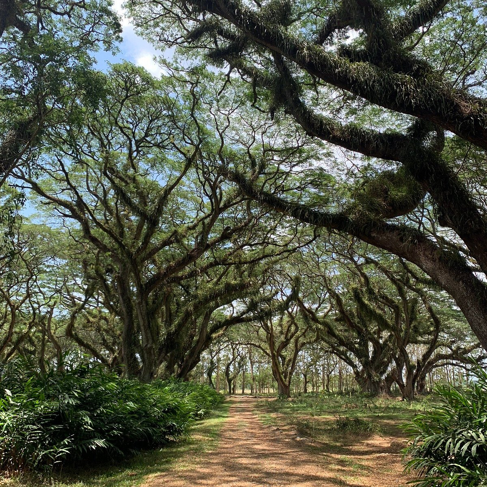
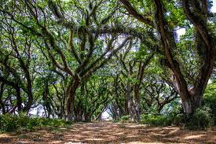
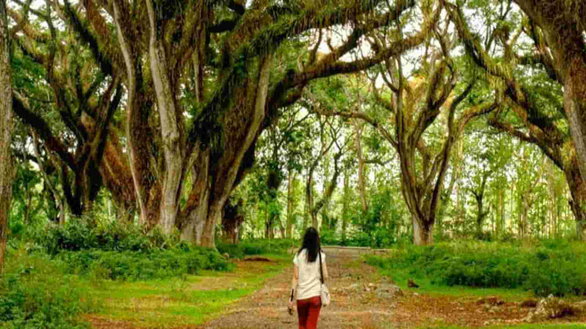
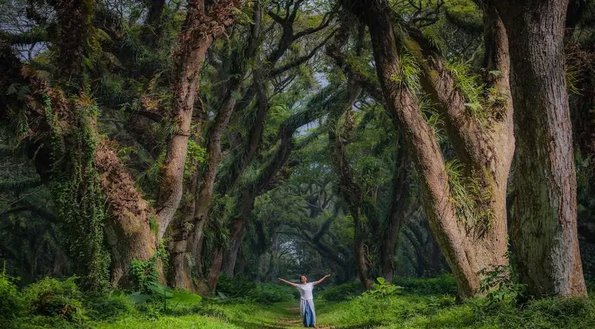
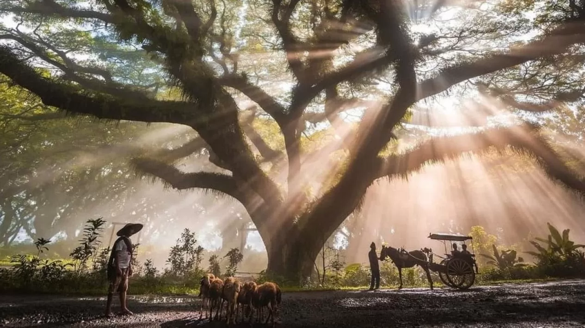

De Djawatan
Hutan dengan pohon Trembesi raksasa berusia ratusan tahun yang diselimuti tumbuhan epifit yang menciptakan suasana seperti pada film The Lord of the Rings.
Galeri Foto






Informasi Detail
De Djawatan adalah kawasan hutan yang terletak di Desa Benculuk, Kecamatan Cluring, Kabupaten Banyuwangi. Hutan ini dipenuhi dengan pohon trembesi yang telah berusia ratusan tahun, menciptakan suasana yang sejuk dan magis. Luas hutan ini sekitar 3,8 hektar dan dikelola oleh Perhutani.
Keunikan
- Pohon Trembesi Raksasa: Hutan ini didominasi oleh ratusan pohon Trembesi (Ki Hujan) yang usianya mencapai 100 hingga 150 tahun. Batang dan cabangnya sangat besar dan menjulang tinggi, menciptakan kanopi yang sangat teduh.
- Karakteristik Mistis: Pepohonan trembesi ini hampir seluruhnya diselimuti oleh tumbuhan epifit, lumut, dan akar gantung berwarna hijau gelap. Kombinasi ini memberikan kesan kuno, lembab, dan misterius, sehingga sering disamakan dengan Hutan Fangorn dalam kisah The Lord of the Rings atau hutan-hutan di film fantasi Disney.
- Cahaya Dramatis: Karena kanopi yang sangat rapat, cahaya matahari yang masuk ke lantai hutan menjadi sangat minim dan terfilter. Saat pagi atau sore, berkas cahaya (disebut sun rays atau Tindall effect) yang menembus dedaunan menciptakan suasana yang sangat dramatis dan fotogenik.
- Sejarah Eks-TPK: Awalnya, kawasan ini adalah Tempat Penimbunan Kayu (TPK) milik Perhutani. Ini menjelaskan mengapa pohon-pohon yang ada di sana ditanam dan diatur sedemikian rupa, bukan tumbuh liar sepenuhnya, meskipun kini tampilannya sudah alami dan artistik.
- Daya Tarik Fotografi: Keindahan dan keunikan visualnya menjadikannya salah satu lokasi pre-wedding dan fotografi lanskap yang paling dicari di Jawa Timur, terkenal dengan suasana hutan yang dark fantasy namun romantis.
Aktivitas yang Bisa Dilakukan
- Berfoto di Hutan Trembesi
- Berburu Sun Rays
- Menaiki ATV Off-road
- Piknik Santai
- Menikmati Keheningan
- Menjelajah Sejarah Bangunan Tua
Info Praktis
- Lokasi: Purwosari, Benculuk, Kec. Cluring, Kabupaten Banyuwangi
- Biaya Masuk: Sekitar Rp 5.000 - Rp 6.000 per orang.
- Waktu Terbaik Berkunjung: Pada musim kemarau di bulan Juni - September, Pagi atau Sore hari
- Transportasi: Dapat diakses dengan berbagai kendaraan dengan waktu tempuh kurang dari 1 jam dari pusat Kota Banyuwangi
- Akomodasi: Pilihlah hotel di area pusat kota Banyuwangi (Kecamatan Banyuwangi atau sekitarnya). Area ini menawarkan lebih banyak pilihan hotel, mulai dari budget hingga bintang empat, serta akses mudah ke kuliner dan fasilitas umum lainnya. Anda kemudian bisa melakukan perjalanan satu hari (sekitar 1 jam) pulang-pergi ke De Djawatan.
Peraturan Kunjungan
- Dilarang membuang sampah sembarangan
- Ikuti semua petunjuk arah dan rambu-rambu yang dipasang oleh pengelola.
- Untuk sesi foto komersial (seperti pre-wedding atau iklan), pengunjung wajib melapor dan mungkin dikenakan biaya izin khusus yang berbeda dari tiket masuk biasa.
- Jika Anda membawa hewan peliharaan (biasanya anjing atau kucing), pastikan hewan tersebut terikat tali (menggunakan leash) dan Anda bertanggung jawab penuh atas kebersihannya.
- Patuhi jam buka dan tutup.